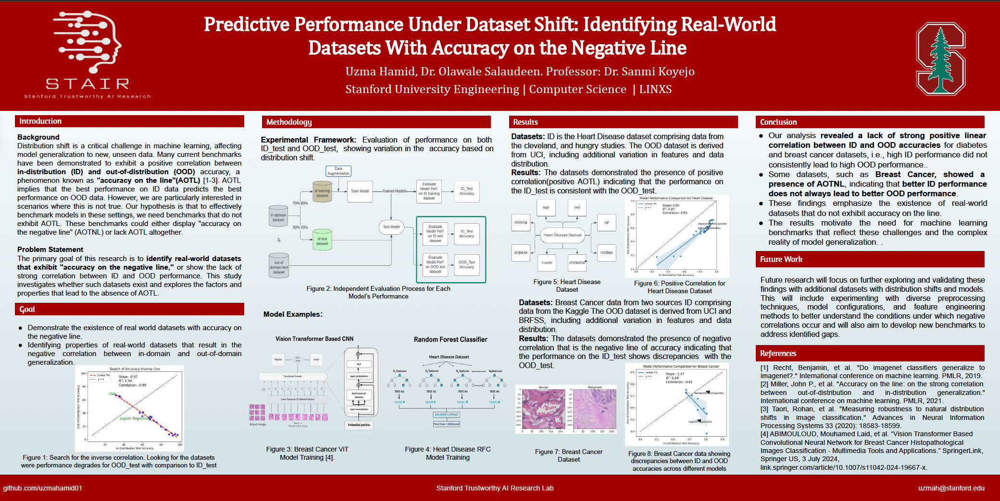
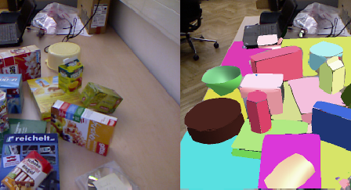
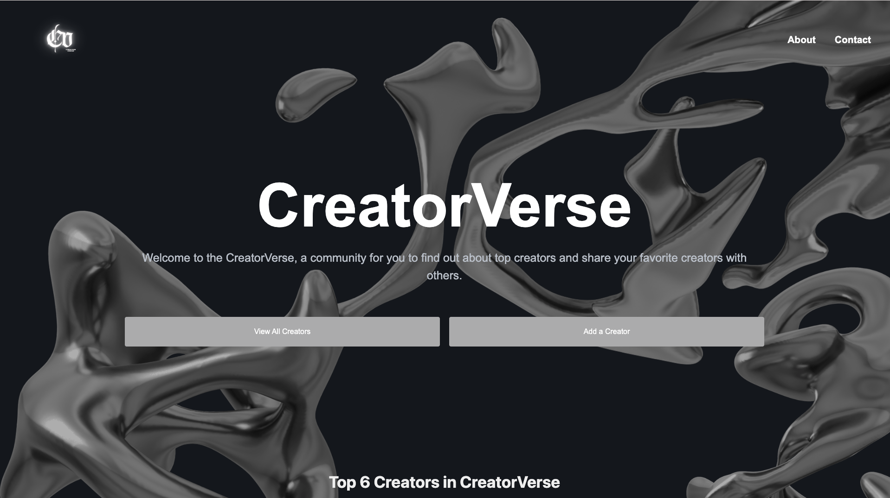
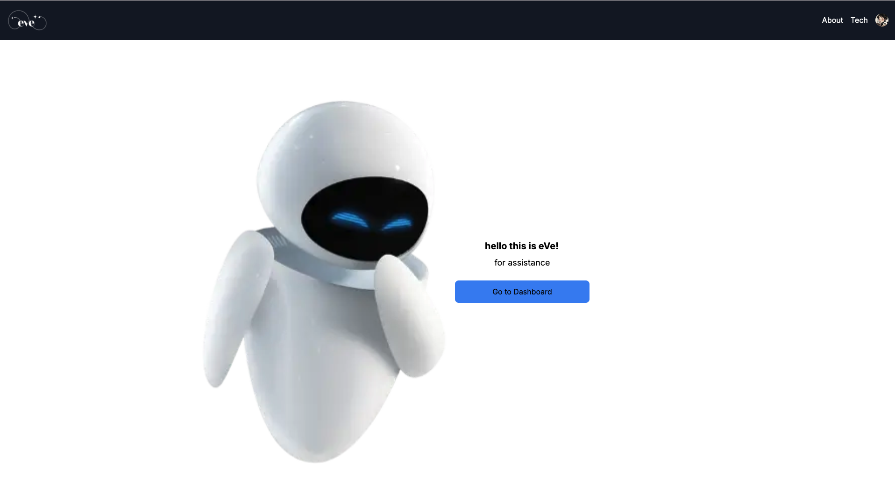

Olivia iChild HealthWise
Olivia iChild HealthWise is a telehealth platform designed to provide remote health services
to patients and caregivers. The platform utilizes AI-powered chatbots to provide
health advice and connect patients with healthcare professionals.
GitHub
Cleo - Smart Course Schedule Builder
Cleo is a smart course schedule builder that utilizes machine learning to optimize course
schedules for students. The platform takes into account student preferences, course
availability, and academic requirements to create personalized schedules.
GitHub

Accuracy of the Line
Conducted the research that explores the relationship between in-distribution (ID) and out-of-distribution (OOD) accuracies in machine learning models. Contrary to the common belief that high ID accuracy ensures similar OOD performance, our study reveals cases where this does not hold, highlighting the "Accuracy on the Negative Line" (AOTNL) phenomenon. By using advanced neural networks and experimental analysis, we demonstrate the challenges of model generalization across varying data distributions, underscoring the need for better benchmarks that reflect real-world complexities.
GitHub

Image Processing and Annotation Pipeline
Directed a Computer Vision research initiative resulting in a sophisticated fine-grain annotation tool using Python for image and object detection and semantic segmentation, enhancing accessibility for visually impaired individuals.
GitHub

Deep Learning Based Object Grasping for Robots
Directed an innovative research project on image segmentation for table-top objects using Graph Neural Networks (GNN). This research advances image segmentation and object grasping, improving robotic precision in complex environments.
GitHub

Revs Restaurant Web Application
Revs is a customized dining app for Rev's Grill, reimagining the point-of-sale system with human-centered design for simplified orders and efficiency. It features OAuth authentication, manager reports, and an intuitive menu.
GitHub

Chip Visualization
This Python-based project uses deep neural networks and the Euclidean distance matrix to identify the top 7 matching images, leveraging VGG, ResNet50, and AlexNet models, with a focus on image similarity through cosine similarity and various libraries for comprehensive analysis.
GitHub

Hack Harvard: Globe Climate News
findEarth is an interactive globe app providing location-based climate change news by tracking user movements, querying newsapi.org via Spring Boot, and summarizing articles using GPT 3.5 for personalized updates.
GitHub

CreatorVerse
CreatorVerse, is a full stack web app which connects you with top creators from various fields.
Discover and add inspiring content while exploring creator profiles and staying updated with
their latest work. CreatorVerse provides the tools to engage with the creative
community and share your favorite creators with others. Join us and be part of a dynamic space where creativity
thrives.
GitHub

Connect-Four
Connect Four is a JavaFX class project with a GUI, featuring a Connect Four board, single-player mode with random AI, user-friendly design, and object-oriented classes for efficient data management and AI strategies.
GitHub

eVe AI-Support
eVe is an AI-powered chatbot designed to provide emotional support and companionship to users.
eVe utilizes natural language processing (NLP) to understand user input and respond accordingly.
eVe's primary goal is to offer a listening ear and provide helpful advice when needed.
GitHub


{kind=link}
{kind=link}
{kind=link}
{kind=link}
{kind=link}
{kind=link}